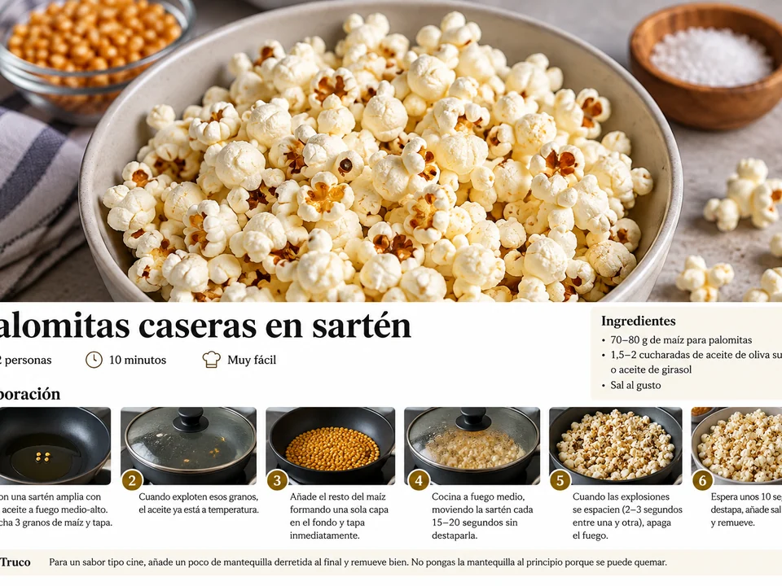

Palomitas caseras en sartén
Palomitas hechas en sartén u olla con maíz, aceite y sal. El truco está en esperar a que el aceite alcance temperatura y mover la sartén sin destaparla.
- Tiempo
- 10 min
- Raciones
- 2 personas
- Dificultad
- Muy fácil

PASO A PASO
Cómo preparar palomitas caseras en sartén
- Pon una sartén u olla amplia con el aceite a fuego medio-alto.
- Echa 3 granos de maíz y tapa.
- Cuando exploten esos granos, el aceite ya está a temperatura. Añade el resto del maíz formando una sola capa en el fondo y tapa inmediatamente.
- Baja ligeramente a fuego medio. Cada 15–20 segundos, mueve la sartén agarrándola por el mango, sin destaparla, para evitar que se quemen.
- Cuando las explosiones se espacien y haya unos 2–3 segundos entre una y otra, apaga el fuego.
- Espera unos 10 segundos antes de destapar. Añade sal al gusto y remueve.
UN POCO DE OFICIO
Para que te salga bien
Consejos
- Mantén el maíz en una sola capa para que reciba el calor de forma más uniforme.
- Apaga el fuego cuando haya 2–3 segundos entre explosiones; no esperes a que deje de sonar por completo.
Recomendaciones
Espera unos 10 segundos antes de destapar para que terminen de abrirse los últimos granos con el calor residual.
Cómo servir y presentar
Pásalas a un bol, añade sal al gusto y, si quieres, termina con un poco de mantequilla derretida bien mezclada.
MÁS SOBRE ESTA RECETA
↑ Volver a la recetaPalomitas caseras: controlar el calor es casi todo
Hacer palomitas en casa no necesita más que maíz, una grasa adecuada y una sartén u olla con tapa. La receta usa tres granos como señal para saber cuándo el aceite está listo antes de añadir el resto.
Tres granos como referencia
Los tres primeros granos sirven para comprobar que el aceite está suficientemente caliente. Cuando revientan, se añade el resto del maíz en una sola capa y se tapa enseguida.
Mover la sartén sin abrir
Durante la cocción conviene mover la sartén cada 15–20 segundos sin destaparla. Así se reparte mejor el calor y se reduce el riesgo de que algunas palomitas se quemen mientras otras siguen sin abrir.
La mantequilla, al final
Si quieres un sabor más parecido al de cine, la receta propone añadir un poco de mantequilla derretida al final. No se pone al principio porque puede quemarse.
Sigue cocinando
Más tapas y entrantes
Pimientos de Padrón
Pimientos de Padrón fritos en aceite de oliva y terminados con sal gruesa.


Pan con ajo y aceite
Pan tostado frotado con ajo, aceite de oliva virgen extra y sal.